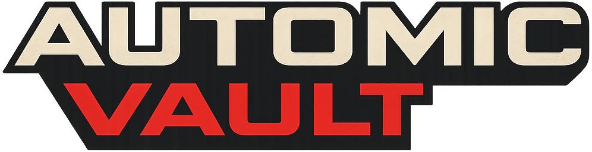
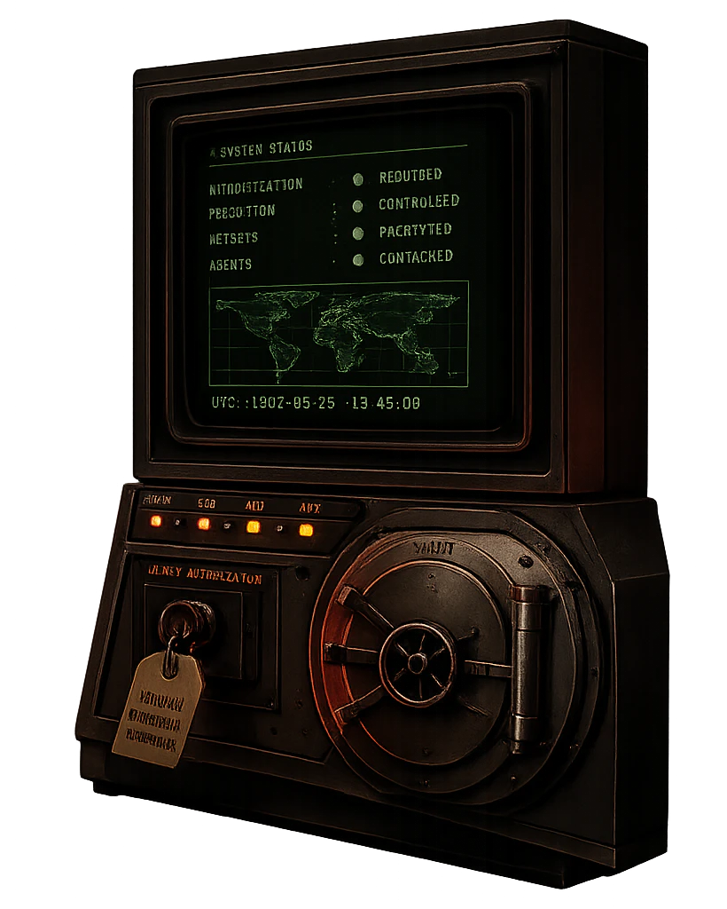

Move tokens out of files
Stop relying on pasted exports, shell profiles, and local config that any process can read.


Runtime API key security
Agents can call CLIs, SDKs, package managers, and deploy scripts. Automic Vault keeps the key out of the conversation and gives it only to the command you approve.
Last updated: May 15, 2026
API key management for AI agents should treat each token as a capability, not as text for a model to handle. Automic Vault stores keys locally and injects named values only into approved command-line tools.

The local key problem
Most developer tokens are powerful enough to read private data, publish packages, or change infrastructure. Agent workflows need key use without key exposure.
Stop relying on pasted exports, shell profiles, and local config that any process can read.
The command receives the specific token it needs instead of inheriting the whole developer environment.
A human can approve the executable and action, not a vague agent session.
Use mediated execution when API-backed commands can publish, deploy, delete, or reveal data.
Common targets
Protect gh auth material and tokens used for source, release, and package workflows.
Keep cloud credentials out of predictable local files and approve the CLI actions that use them.
Gate npm, PyPI, and package publishing credentials before an agent can mutate releases.
Related protections